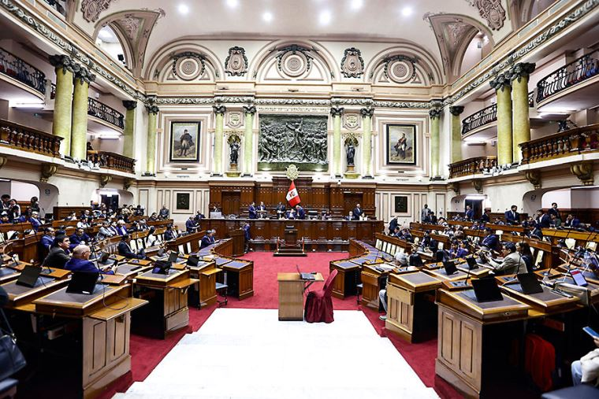
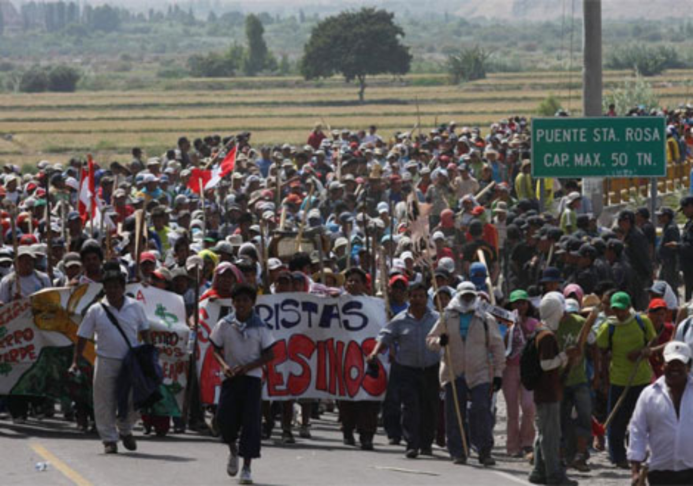
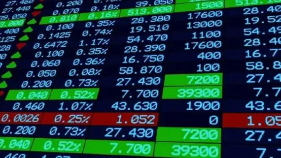

Aprueban la ley de presupuesto 2027 diez días antes del plazo
Redacción | Equipo de Economía | 26 Noviembre 2026

El Congreso de la República aprobó por amplia mayoría las leyes de Presupuesto del Sector Público, de Equilibrio Financiero y de Endeudamiento para el Año Fiscal 2027, diez días antes del plazo establecido por la Constitución Política del Perú, que vence el 30 de noviembre.
Este resultado refleja la capacidad de diálogo y articulación entre los poderes del Estado.
Gobierno anuncia ampliar la red de gas natural a siete regiones
Redacción | Equipo de Economía | 26 Noviembre 2026
La presidenta Keiko Fujimori participó este jueves 26 de noviembre, durante CADE Ejecutivos 2026 en Cusco, en la ceremonia de suscripción de la Novena Adenda al contrato de concesión de Cálidda, que permitirá extender la distribución de gas natural a siete regiones del centro y sur del país. El acuerdo compromete una inversión de US$550 millones y más de 201.000 conexiones residenciales en un plazo máximo de 114 meses, aunque su aprobación llega después de una serie de cuestionamientos sobre las condiciones económicas de la ampliación y los beneficios que recibirán las nuevas localidades.
Mineros artesanales marchan para exigir ampliar el Reinfo
Redacción | Equipo de Economía | 23 Noviembre 2026

Cientos de mineros se concentraron este martes frente al Parlamento de Perú, en el centro de la capital Lima, para exigir la ampliación, nuevamente por un año más del proceso de regularización de sus actividades, que vence el próximo 31 de diciembre, fecha a partir de la cual se considerará mineros ilegales a quienes queden fuera.
El mercado bursátil cierra al alza
Roberto Gómez | Analista Financiero | 24 Mayo 2026

Los principales índices bursátiles registraron ganancias significativas del 2% en la jornada de hoy, impulsados por los buenos resultados trimestrales de las empresas tecnológicas y energéticas.
Los inversores se muestran optimistas ante las señales de estabilización de la inflación, lo que podría llevar a los bancos centrales a moderar sus políticas de aumento de tasas de interés en los próximos meses.